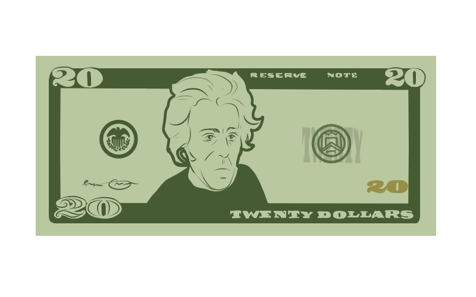

Documentation
The purpose of this program is to help students visualize monetary values. Although this can benefit anyone who is a more visual learner, our target audience is mostly intended for special ed students and/or younger children who, when asked to give change for a specific value, cannot visualize the bills and coins needed. In order to solve this problem, we made this program to allow the user to input an amount, which will then be shown with the physical equivalence with the number of coins/bills alongside it. To assist with giving change, the user only has to input the starting cost and then click on the money that was given to them, and then the program will calculate the change and show which bills and coins to use (and how much of each).
Using Bootstrap, THREE.js, Animate CSS, JavaScript, jQuery, HTML, and CSS, this site was made. All artwork was made by this team using Adobe Photoshop and Adobe Illustrator.
This program was made during BrickHacks V at Rochester Institute of Technology by Jin Jin Heipler, Julia Hotaling, and Ella Mathewson.
Checkout the github here.